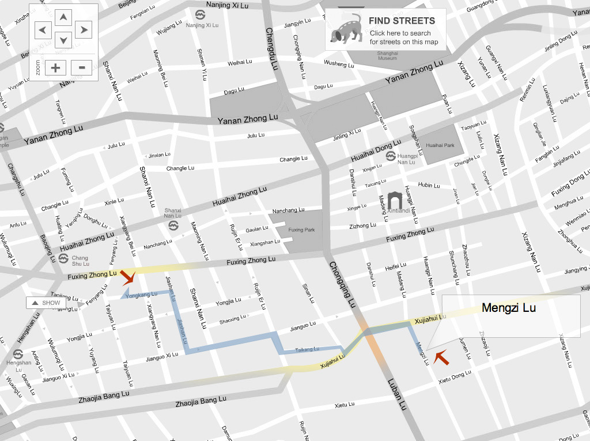
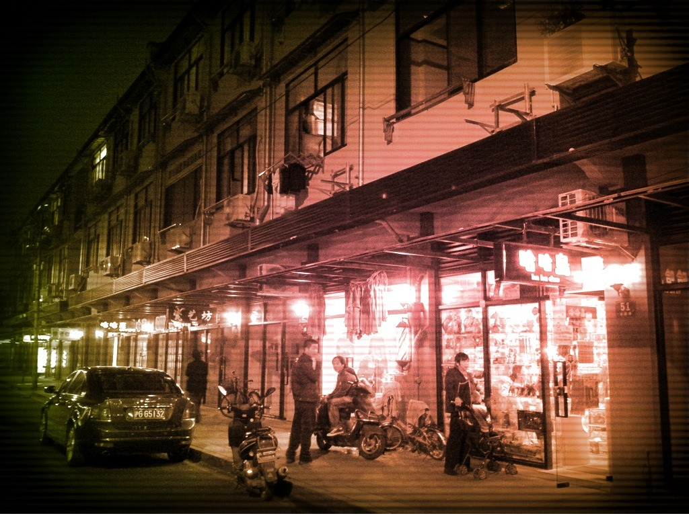
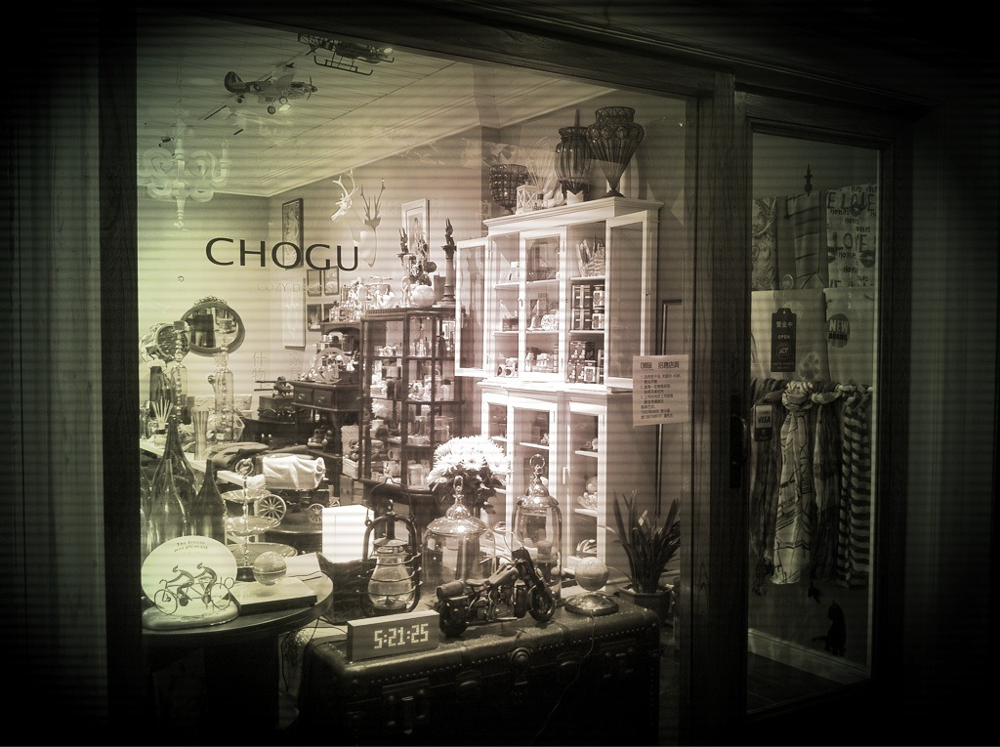
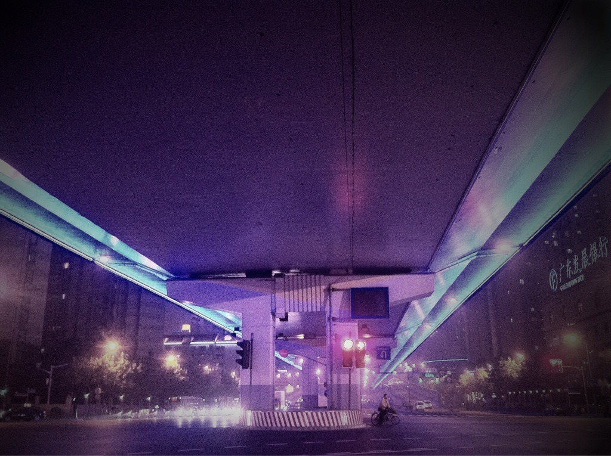
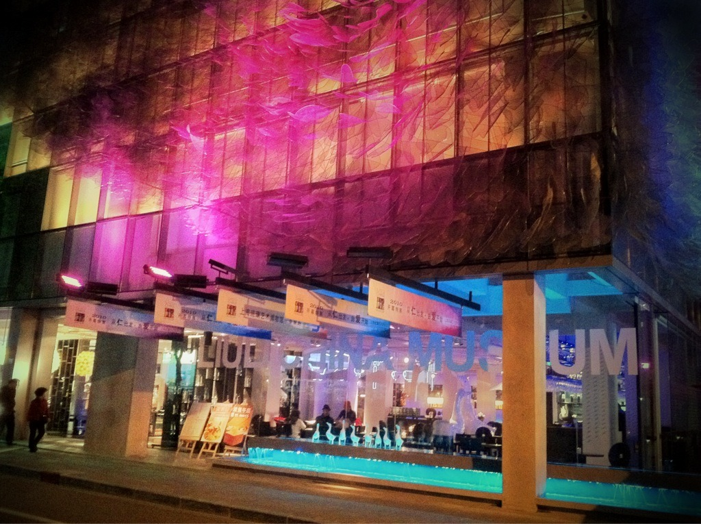
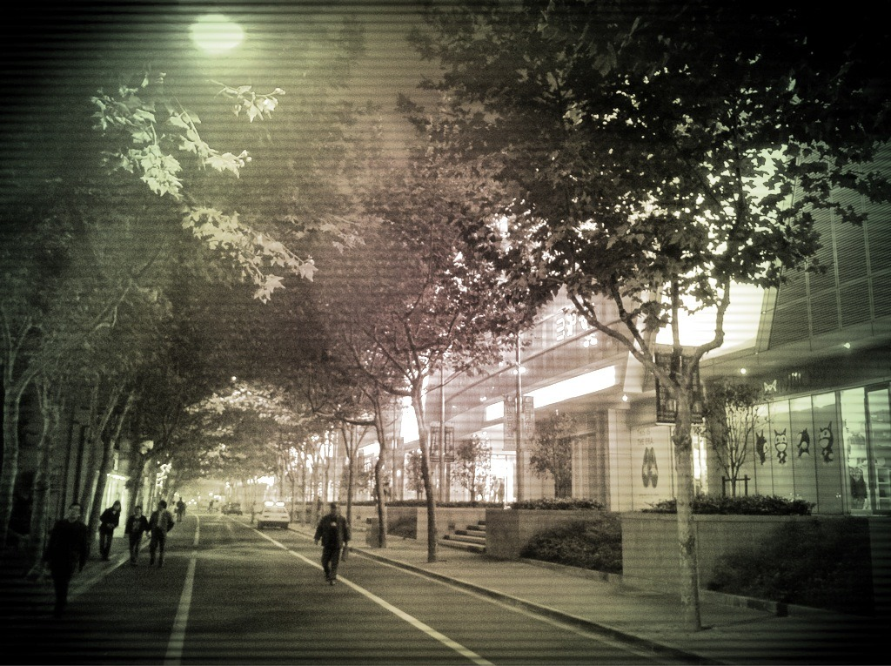

Mon, 01 Nov 2010 15:56:00 · shanghai · china · city · nightscene · photography · walking
heres some random pix that i snapped on my way






Here’s some random pix that I snapped on my way home… walking. Since I’m easily distracted and get sidetracked by anything that caught my fancy, it took me about 27-30 minutes in relatively fast pace.